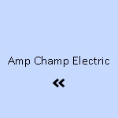

News
Electrical Installation Healdsburg
Electrical Installation Healdsburg
Electrical Installation Santa Rosa
Electrical Installation Cloverdale
Electrical Installation Geyserville
Electrical Installation Windsor
Maintenance and Repair Services Healdsburg
Maintenance and Repair Services Healdsburg
Maintenance and Repair Services Santa Rosa
Maintenance and Repair Services Cloverdale
Maintenance and Repair Services Geyserville
Maintenance and Repair Services Windsor
Electrical Safety Inspections Healdsburg
Electrical Safety Inspections Healdsburg
Electrical Safety Inspections Santa Rosa
Electrical Safety Inspections Cloverdale
Electrical Safety Inspections Geyserville
Electrical Safety Inspections Windsor
Energy Efficiency Upgrades Healdsburg
Energy Efficiency Upgrades Healdsburg
Energy Efficiency Upgrades Santa Rosa
Energy Efficiency Upgrades Cloverdale
Energy Efficiency Upgrades Geyserville
Energy Efficiency Upgrades Windsor
Specialty Electrical Services Healdsburg
Specialty Electrical Services Healdsburg
Specialty Electrical Services Santa Rosa
Specialty Electrical Services Cloverdale
Specialty Electrical Services Geyserville
Specialty Electrical Services Windsor
About Us
Contact Us
Electrical Safety Inspections Geyserville
Electrical Grounding
Electrical Safety Inspections: Ensuring a Secure and Risk-free Environment
In the modern world, where electricity is as vital as air and water for sustaining our day-to-day lives, the significance of electrical safety cannot be overstated. From illuminating our homes to powering industries, electricity’s omnipresence brings with it an inherent responsibility to ensure its safe use.
Electrical Service Upgrades
Electrical safety inspections are thus critical procedures that serve to protect property and lives from the hazards posed by faulty electrical systems.
The Importance of Electrical Safety Inspections
An electrical safety inspection is a thorough examination of a home or building's electrical wiring, systems, and components. These inspections are designed to identify potential hazards such as overloaded circuits, poor insulation, defective parts, or violations of code standards. The primary goal is not just compliance with legal requirements but also preventing fires, shocks, and other dangerous situations that can arise from electrical malfunctions.
Electrical safety inspections should be seen as preventive health checks for your property's electrical system. Just as regular medical check-ups can detect issues before they become severe problems, timely inspections can catch risks before they escalate into emergencies.
Electrical Safety Inspections Geyserville - Whole House Rewiring
Electrical System Design
High Voltage Services
National Electrical Code (NEC)
Online Electrician Resources
This proactive approach saves money in the long run by avoiding costly repairs after a failure has occurred.
Who Performs Electrical Safety Inspections?
Licensed electricians or certified inspectors usually carry out these examinations. They have specialized knowledge about local codes and standards which vary from place to place but generally align with national guidelines like those set forth by the National Electrical Code (NEC) in the United States.
During an Inspection
During an inspection, professionals will look at several key areas including:
1. Service Panels – Checking for proper grounding and bonding.
2. Outlets – Testing GFCI (Ground Fault Circuit Interrupter) outlets to ensure they’re functioning correctly.
3.
Power Factor Correction
Wiring – Inspecting visible wiring for signs of wear or damage.
4. Surge Protection – Evaluating surge protectors to safeguard electronics against power spikes.
5. Smoke Detectors – Confirming that smoke detectors are appropriately placed and operational.
After completing their assessment, inspectors provide reports detailing any issues found along with recommendations on how to address them.
When Do You Need an Inspection?
Homeowners should consider having an inspection if:
- Their home is over 25 years old without upgrades.
- There’s been significant renovation work done without evaluation of the existing electrical system.
- They’re purchasing a new home—having a pre-purchase inspection ensures there aren't hidden dangers lurking behind walls.
- Appliances behave erratically or circuit breakers trip frequently.
Commercial properties often require more frequent inspections due to heavier usage patterns and regulatory mandates specific to certain industries.
The Benefits Beyond Safety
While safety is paramount when it comes to these inspections, there are additional benefits including energy efficiency improvements resulting in reduced costs over time; insurance incentives where some insurers offer discounts for homes that pass regular inspections; and peace of mind knowing your environment adheres to safety norms.
Conclusion
In conclusion, electrical safety inspections stand as guardians between everyday life and potential disaster caused by unseen hazards within our electric grids at home or workspaces. Regularly scheduled examinations not only fulfill legal obligations but also echo our collective commitment towards preserving human life above all else—underscoring electricity's role not just as a tool for progress but also one demanding respect through vigilant maintenance practices such as these essential safety evaluations.
Title: Home Electrical Safety Assessments: Guarding Against the Invisible Threat
Electricity is a fundamental component of modern life, powering our homes and enabling a myriad of conveniences that we often take for granted. However, with the benefits of electricity also come potential hazards. Home electrical safety assessments are an essential tool in ensuring that the invisible currents flowing through our living spaces do so safely, without posing risks to property or personal well-being.
Understanding the Need for Safety Assessments
Electrical safety in the home is not merely about avoiding immediate dangers; it's an ongoing commitment to prevent accidents and malfunctions that can lead to fires, shocks, and other serious incidents. The wiring hidden behind walls, the outlets we plug devices into, and the appliances we use daily all have one thing in common—they can become sources of danger if not properly installed, maintained, or used.
Why Conduct a Home Electrical Safety Assessment?
The reasons for conducting home electrical safety assessments are clear:
1. **Prevention of Fires:** Faulty wiring or overloaded circuits can cause sparks leading to fires. Regular checks help identify such faults before they escalate.
2. **Protection from Electric Shocks:** Damaged insulation, grounded wires or malfunctioning appliances can be hazardous. Assessments ensure protective measures are in place.
3. **Ensuring Compliance with Codes:** Building codes evolve over time as safety standards improve. An assessment verifies that your home's electrical systems conform to current regulations.
4. **Peace of Mind:** Knowing your home has been professionally assessed provides reassurance that you've taken proactive steps towards protecting your family.
Components of a Comprehensive Assessment
A thorough electrical safety assessment includes several key components:
- **Visual Inspection**: A qualified electrician examines accessible components like outlets, switches, and light fixtures for signs of wear or damage.
- **Testing**: Specialized equipment tests GFCIs (Ground Fault Circuit Interrupters), AFCIs (Arc-Fault Circuit Interrupters), circuit breakers, and other protective devices to ensure they're functioning correctly.
- **Load Analysis**: This determines if the electrical system is being overtaxed by checking whether circuits are carrying more current than they're designed for.
- **Wiring Review**: Older homes may have outdated wiring types like knob-and-tube or aluminum wiring which carry higher risks and may need replacement.
Selecting a Qualified Professional
For an effective assessment, it’s crucial to select a certified electrician who has experience performing comprehensive evaluations. They should be knowledgeable about local codes and capable of providing detailed explanations regarding any issues identified along with appropriate recommendations.
Follow-Up Actions Post-Assessment
Once an assessment is complete:
Electrical Safety Inspections Geyserville - Landscape Lighting
Landscape Lighting
Power Factor Correction
Electrical Trade Schools
Electrical System Design
High Voltage Services
1. Address Immediate Risks: Any critical problems discovered during the assessment must be rectified promptly to mitigate imminent hazards.
2. Plan Upgrades: For non-critical issues or enhancements—like adding surge protectors—develop a timeline and budget accordingly.
3. Maintain Records: Keep documentation from each assessment as a reference point for future inspections or when undertaking renovations.
Conclusion
Home electrical safety assessments serve as guardians against unseen threats lurking within our dwellings' intricate power networks. By identifying potential problems early on and guiding homeowners toward corrective actions, these assessments contribute greatly towards creating safer living environments—a responsibility shared by all who wish to shield their homes from preventable disasters brought on by electricity’s unseen hand.
In essence, while electricity continues its silent flow beneath our feet and within our walls—out of sight but ever-present—the vigilance afforded by regular safety assessments ensures it remains not just convenient but safe for everyone under our roofs now and into the future.
electrical-installation-healdsburg.html
electrical-installation-santa-rosa.html
electrical-installation-cloverdale.html
electrical-installation-geyserville.html
electrical-installation-windsor.html
maintenance-and-repair-services-healdsburg.html
maintenance-and-repair-services-santa-rosa.html
maintenance-and-repair-services-cloverdale.html
maintenance-and-repair-services-geyserville.html
maintenance-and-repair-services-windsor.html
electrical-safety-inspections-healdsburg.html
electrical-safety-inspections-santa-rosa.html
electrical-safety-inspections-cloverdale.html
electrical-safety-inspections-geyserville.html
electrical-safety-inspections-windsor.html
energy-efficiency-upgrades-healdsburg.html
energy-efficiency-upgrades-santa-rosa.html
energy-efficiency-upgrades-cloverdale.html
energy-efficiency-upgrades-geyserville.html
energy-efficiency-upgrades-windsor.html
specialty-electrical-services-healdsburg.html
specialty-electrical-services-santa-rosa.html
specialty-electrical-services-cloverdale.html
specialty-electrical-services-geyserville.html
specialty-electrical-services-windsor.html
privacy-policy.html
sitemap.html
sitemap.xml
about-us.html
feed.xml
Compliance checks with local codes and standards
Title: The Imperative of Compliance Checks with Local Codes and Standards
In the intricate web of modern society, compliance checks with local codes and standards serve as a critical safeguard that ensures the safety, functionality, and sustainability of our built environment. These checks are a fundamental part of regulatory frameworks established by authoritative bodies to dictate the minimum acceptable requirements for various aspects of construction, operations, maintenance, and other industry practices. Complying with these regulations not only guarantees legal adherence but also promotes ethical responsibility towards the community, environment, and stakeholders involved.
At first glance, compliance may seem like an arduous task laden with bureaucratic red tape that stifles innovation; however, its true essence lies in protecting public interest while fostering professional integrity. Building codes and standards exemplify this protection by addressing crucial factors such as structural integrity, fire safety, electrical systems safety, accessibility for persons with disabilities, energy conservation measures, and overall environmental impact.
One cannot overstate the importance of regular compliance checks. They are preventive rather than reactive measures – instead of waiting for accidents or incidents to occur before taking action; they anticipate potential problems and address them proactively. For example, in construction projects adhering to seismic codes is non-negotiable in earthquake-prone areas. These specifications are designed to minimize damage during seismic events thus saving lives and reducing economic loss.
Compliance checks also play an essential role in maintaining quality control across industries. By ensuring that materials used meet specified standards or that manufactured products pass stringent testing procedures before reaching consumers, we ensure reliability and trustworthiness in market offerings.
Moreover, through enforcement of environmental regulations – including waste management protocols or emissions guidelines – we can mitigate negative impacts on ecosystems thereby preserving natural resources for future generations. Such ecological mindfulness encapsulated within compliance strategies supports sustainable development goals at both local and global levels.
Electrical Grounding
Engaging in continuous dialogue with regulatory agencies helps businesses stay abreast of evolving codes which often reflect advancements in technology or shifts in societal values. This dynamic relationship between regulation creators and followers encourages innovation within a structured framework where cutting-edge solutions can be implemented without compromising on foundational safety principles.
City planners architects engineers business owners — all must navigate the maze of local ordinances zoning laws building codes employment standards among countless other regulatory documents relevant to their field's activities ensuring alignment throughout project lifecycles from inception through completion even into decommissioning phases if applicable.
When it comes down to it conducting thorough comprehensive compliance checks is not simply about following rules — it's about respect Respect for laws crafted protect us all respect for professional disciplines whose credibility hinges upon adherence those laws respect for individuals communities who rely upon assurance structures systems services meet agreed-upon benchmarks quality safety reliability It's recognition interconnectedness human endeavors acknowledgment shared responsibility stewardship over our collective habitat sphere influence
In conclusion vigilance governance becomes increasingly complex nuanced landscape It imperative remain diligent pursuit excellence via strict observance local codes standards Although sometimes perceived burdensome process reality reflects deep commitment welfare society whole Ultimately well-executed compliance check acts as a testament dedication upholding highest possible level civic duty corporate accountability personal ethics—cornerstones thriving progressive community
Testing of GFCI outlets and breakers
Testing of GFCI Outlets and Breakers: An Essential Safety Procedure
Ground Fault Circuit Interrupters (GFCIs) are critical safety devices that play a vital role in protecting us from electrical shocks, particularly in areas where electricity is likely to come into contact with water. The installation of GFCI outlets and breakers in homes and workplaces has significantly reduced the incidence of electrocutions over the years. However, like all safety devices, their reliability can only be assured through regular testing and maintenance.
The importance of testing cannot be overstated. A GFCI device constantly monitors the electrical current flowing through a circuit. It is designed to detect any imbalance between the incoming and outgoing current, which is indicative of a ground fault—an unintended electrical path to ground. Upon detection, it swiftly cuts off power to the affected circuit, usually within milliseconds, thereby preventing electric shock or more severe hazards such as fires.
Testing GFCI outlets and breakers should become a routine practice for homeowners and facility managers alike. The process is remarkably straightforward and requires no special equipment or expertise:
1. **For GFCI Outlets:**
Every GFCI outlet has two buttons on its face—usually labeled "Test" and "Reset." To test an outlet:
- Plug in a small appliance such as a lamp or a radio.
- Press the "Test" button on the GFCI outlet.
- This should cause the appliance to turn off as power is cut from the outlet.
- Pressing the "Reset" button will restore power—if it does not, there may be an issue with your GFI that requires attention from an electrician.
2. **For GFCI Breakers:**
These devices are found in your service panel (circuit breaker box).
- Identify which breaker has the test feature; it will typically have a “Test” button on it.
- Ensure some lights or appliances are active on this circuit for testing purposes.
- Push the "Test" button.
- You'll hear a click sound as it trips, cutting off power just like flipping off manually.
- Reset by moving the switch back to its original position.
It's recommended that these tests be performed monthly because repeated tripping can weaken internal components over time without outwardly showing signs of failure.
Whole House Rewiring
Environmental factors such as moisture or dust accumulation can also impair function undetected.
A failed test indicates immediate concern—it means you're deprived of protection at exactly those moments when risk runs highest: during unexpected surges or faults within your system. If either outlets or breakers fail to trip when tested—or if they trip but do not reset—it's time to consult with an electrician who can investigate further.
Remember too that while testing provides assurance about present functionality, no test can guarantee future performance between checks—which is why other safety practices like proper wiring standards should always accompany reliance on devices like GFIs.
In summary, regular testing ensures that these indispensable guardians stand ready to intervene at critical junctures; neglecting them invites risks we've learned how effectively we can manage with just a little conscientious effort towards our own well-being—and peace of mind comes knowing our diligence safeguards both us today and continues securing safe environments for all tomorrow brings.
Electrical Safety Inspections Windsor
Inspection of surge protectors and grounding
Title: The Importance of Regular Inspection of Surge Protectors and Grounding Systems
Introduction
In our modern world, where electronics play a central role in both our personal and professional lives, the need to protect these devices from sudden surges of electricity has never been more critical. Surge protectors and grounding systems are essential components that safeguard our electrical infrastructure.
Electrical Safety Inspections Geyserville - Whole House Rewiring
National Electrical Code (NEC)
Online Electrician Resources
Electrical Supply Stores
Electrician Training and Certification
National Electrical Code (NEC)
However, their effectiveness can diminish over time if not properly maintained. In this essay, we will explore the significance of regular inspections for surge protectors and grounding systems to ensure they continue to operate effectively.
Understanding Surge Protectors
Surge protectors are devices designed to shield electronic equipment from voltage spikes by redirecting excess electricity away from the protected devices into the grounding line. These voltage spikes can occur due to lightning strikes, power outages, or even fluctuations in the power grid. Without surge protection, sensitive electronics can suffer irreversible damage or drastically reduced lifespans.
The Necessity of Grounding Systems
Grounding systems provide a safe pathway for excess electricity to disperse into the earth. They are an integral part of any electrical system because they help prevent electric shock hazards and minimize the risk of electrical fires. A well-maintained grounding system ensures that any stray current is immediately directed away from electronic devices and people.
Why Inspections Are Critical
Regular inspections are crucial for several reasons:
1. Wear and Tear: Over time, surge protectors can degrade due to repeated exposure to power surges. Their internal components may wear out, rendering them less effective or even useless against future surges.
2. Environmental Factors: Humidity, temperature changes, dust buildup, and chemical exposure can all impact both surge protectors and grounding systems negatively.
3. Technological Changes: As technology advances, so do power requirements for new devices—what was once adequate protection might no longer suffice for newer equipment.
4. Safety Assurance: Through inspection, potential risks such as loose connections or corroded elements within the grounding system can be identified and remedied before they pose a threat.
Inspection Process
A thorough inspection involves several steps:
- Visual Examination: This includes checking for signs of damage like cracked casings on surge protectors or corrosion on grounding elements.
- Performance Testing: Specialized equipment is used to simulate surges and verify that surge protectors respond appropriately.
- Measurement Verification: Resistance measurements ensure that the grounding system provides a low-resistance path to earth.
- Documentation Review: Ensuring compliance with local codes and standards is paramount; reviewing past inspection records helps track performance over time.
Best Practices
Adopting best practices is key:
- Schedule Regular Checks: Establish a routine schedule based on manufacturer recommendations and local regulations.
- Hire Qualified Professionals: Only trained technicians should conduct inspections since they understand safety protocols and technical nuances.
- Update Equipment as Necessary: If tests reveal that protection levels are inadequate or hardware is outdated, upgrades should be implemented immediately.
- Maintain Records Diligently: Keeping detailed records facilitates ongoing maintenance strategies and proves compliance with safety standards.
Conclusion
The periodic inspection of surge protectors and grounding systems is not merely about adhering to regulations—it's about actively protecting our investments in electronics while ensuring our safety from electrical hazards.
Landscape Lighting
By understanding their importance in our daily operations, we recognize that these protective measures cannot be set up once then forgotten; they require ongoing attention through regular evaluation by skilled professionals. With vigilant care comes peace of mind—and in a world increasingly dependent on electronic technology—that assurance is invaluable.
Evaluation of the overall condition of the electrical system
Evaluation of the Overall Condition of the Electrical System
Electrical Safety Inspections Geyserville - Electrical Trade Schools
Electrical Engineering Services
Landscape Lighting
Power Factor Correction
Electrical Trade Schools
Electrical System Design
The electrical system within any structure, be it residential, commercial or industrial, serves as its lifeline. It is a complex interconnection of wires, circuits, devices and components that work in harmony to distribute power effectively and safely throughout the facility. Evaluating the overall condition of this system is not just a matter of maintaining operational efficiency; it's also crucial for ensuring safety and compliance with various codes and regulations.
An evaluation begins with an assessment of the electrical load. The demand for electricity must be balanced with the capacity of the existing system to ensure there are no overloads which can lead to outages or fire hazards. This involves calculating total energy consumption against what the infrastructure can handle without stressing circuit breakers or wiring.
Visual inspections form another critical part of the evaluation process. They help identify any obvious signs of wear and tear such as frayed wires, rust on panel boxes, discolored outlets or switches, and other damage that could compromise safety or functionality. Such issues might seem minor but could be indicative of underlying problems that require immediate attention.
Testing is another essential step in evaluating an electrical system’s condition. Various tests like insulation resistance testing, ground fault circuit interrupter (GFCI) testing, and thermographic inspections can reveal hidden flaws in components that might not be apparent through visual inspection alone. These tests should be performed regularly by qualified electricians using specialized equipment to ensure accurate results.
Another aspect to consider during an evaluation is code compliance. Electrical codes evolve over time as advancements in technology occur and more is understood about safety practices. A professional evaluator will compare your current setup against these standards to determine if any upgrades or modifications are needed.
Age is also a consideration when assessing an electrical system's overall condition. As systems age, they become more susceptible to wear-out failures due to prolonged stress on their components.
Electrical Safety Inspections Geyserville - Whole House Rewiring
High Voltage Services
National Electrical Code (NEC)
Online Electrician Resources
Electrical Supply Stores
Electrician Training and Certification
High Voltage Services
Replacing obsolete elements with newer ones that have better performance metrics can enhance both safety and efficiency.
Moreover, documentation review helps ascertain whether maintenance has been performed according to schedule and if past issues were resolved appropriately. Without proper records detailing maintenance history, evaluations may lack context regarding recurring problems or ad-hoc fixes which could affect the integrity of the entire system.
In conclusion, conducting a thorough evaluation of an electrical system takes into account various factors including load demands, visual conditions, test results, code compliance status, age-related concerns as well as historical documentation review. This multi-faceted approach ensures not just continued operation but also bolsters safety measures protecting property and lives from potential hazards associated with electrical malfunctions. Regular evaluations by skilled professionals are indispensable for sustaining optimal performance levels while keeping abreast with technological advancements and regulatory changes in this critical field.
About
About Geyserville
Check our other pages :
Electrical Installation Windsor
Electrical Safety Inspections Santa Rosa
Maintenance and Repair Services Cloverdale
Specialty Electrical Services Windsor
Frequently Asked Questions
What does an electrical safety inspection involve in Geyserville?
An electrical safety inspection in Geyserville typically involves a thorough examination of your homes or buildings electrical system. This includes checking the condition and operation of circuit breakers, wiring, outlets, switches, and other components to ensure they are safe and meet current codes. The inspector will look for any signs of wear, damage, improper installation, or potential hazards.
How often should I schedule an electrical safety inspection for my property in Geyserville?
Its recommended to have an electrical safety inspection every 3-5 years for residential properties and more frequently for commercial properties or older homes. Additionally, inspections should be considered when purchasing a new property, after a major renovation or addition, or if you notice any signs of electrical problems.
Who is qualified to perform an electrical safety inspection in Geyserville?
A licensed electrician with experience in conducting safety inspections is qualified to perform this service. Its important to choose a professional who understands local codes and regulations specific to Geyserville and Sonoma County.
What should I expect after the completion of an electrical safety inspection?
After completing an inspection, the electrician should provide you with a detailed report outlining any issues found along with recommendations for repairs or upgrades needed to ensure your electrical system is safe. If there are critical concerns that pose immediate risks, the electrician may recommend prompt action to address these issues.
Electrical Safety Inspections Geyserville